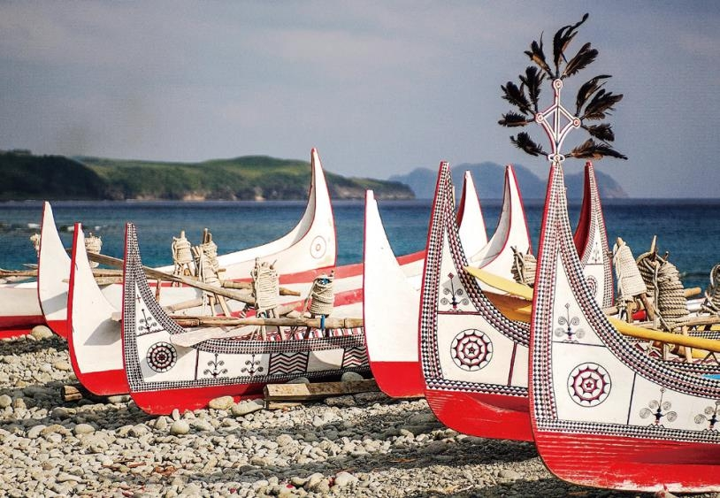

達悟族拼板舟
拼板舟對達悟族人而言，是海上生計及儀式活動中相當重要的工具。達悟族的拼板舟除了造型優美，顏色簡單、典雅外，運用島上多種木材製作的智慧，除了體現出林場間父子工藝技術的傳承外，和船有關的祭典儀式亦彰顯出族人象徵地位的社會意涵。
拼板舟常代表蘭嶼達悟族的文化圖像，像是象徵船眼睛的圓形圖騰，廣為族人及媒體用作代表達悟族或者臺灣原住民意象。
達悟族製作大船是一個充滿嚴格禁忌的過程，包括遵守特定的時令、使用特定的言語、禁忌特定的食物，避免事故，選擇特定的地點等等。雕刻船的禁忌則更加嚴格，因為大船不僅是運載人和神的工具，也象徵著達悟族與陸地和海洋的聯繫，並代表著對生命的肯定和對死亡的否定。達悟族的古謠中，家屋被形容為大船，這表明拼板舟與他們的整體文化有著深刻的聯繫。
船之眼
蘭嶼上最著名的傳統圖騰是船眼紋，它呈現出太陽光芒放射的形狀，以蘭嶼傳統的紅、黑、白色調呈現，形似眼睛，通常被放在拼板舟的船頭和船尾上。這個圖案象徵著船隻在大海中的引導和保護，用以指引方向和驅除災難，因此被稱為「船之眼」。